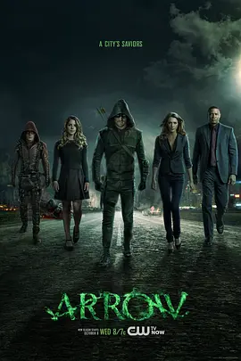

7.3
绿箭侠 第三季
Arrow Season 3
2014
美国
评分 7.3
导演:
格伦·温特 / 约翰·贝林 / 迈克尔·舒尔茨
演员:
斯蒂芬·阿梅尔 / 大卫·莱姆希 / 艾米莉·贝特·理查兹 / 凯蒂·卡西迪 / 凯蒂·洛茨
类型:
冒险,动作,犯罪
剧情简介
城市在经历连番动荡后逐渐恢复表面的平静，Oliver Queen 却始终难以真正放下肩上的责任。他在天台上注视街区灯火，习惯听风声判断潜藏的危险，仿佛只要稍有松懈，夜色便会重新吞噬这座城市。他试图让“绿箭”成为秩序的象征，而不是简单的恐惧来源，于是行动愈发克制，也比过去更依赖团队的力量。Felicity 在监控屏幕前快速敲击指令，数字流光带来些许轻松感；Diggle 则继续稳固团队的底线，他的判断让许多行动避免滑向极端。Oliver 在这两个伙伴之间找到新的平衡，但情感上的距离却始终若即若离。夜里的秘密、白天的掩饰，让他与他们的关系不断接受考验。与此同时，Laurel 的成长成为本季最强烈的脉动。她在法庭上据理力争，也在失落与愤怒的交错中逼迫自己变得更强。她的变化不仅触动 Oliver，也牵引出更深的危机——那些潜伏已久的敌人开始显露轮廓，他们对 Oliver 的过去过于熟悉，对他的脆弱也判断得近乎冷酷。随着威胁一步步逼近，城市再次出现无法忽视的紧张气息。街头的冲突愈加频繁，每一次行动都像是在推开某扇更深的暗门。Oliver 不得不面对一个更艰难的问题：在不断失去所爱、不断被过去追逐的同时，他究竟还能否保持真正的自我？